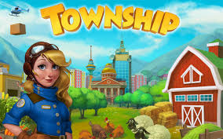

Township
🌱 وصف اللعبة: حيث تلتقي الزراعة بالصناعة
**Township** ليست مجرد لعبة زراعة تقليدية، بل هي مزيج فريد ومبتكر يجمع بين ثلاث محاور لعب رئيسية: **بناء المدينة** (تخطيط وتوسيع)، **الزراعة والإنتاج** (سلسلة الإمداد)، و**الألغاز** (مصدر للموارد). تبدأ كقرية صغيرة وتتولى دور العمدة والمهندس الزراعي والصناعي في آن واحد.
مهمتك هي زراعة المحاصيل في المزرعة، معالجتها في المصانع لإنتاج سلع جديدة (مثل الخبز أو المنسوجات)، ثم بيع هذه السلع لسكان المدينة أو التجارة بها عبر القطارات والقوارب. النجاح في Township يتطلب **تخطيطاً استراتيجياً** لضمان تدفق مستمر للموارد وتلبية احتياجات المجتمع المتنامي.
📈 تحليل نظام اللعب الهجين واستراتيجيات الإنتاج
سلسلة الإمداد والإنتاج الفعّال
العمود الفقري للعبة هو إدارة سلسلة الإنتاج. لكي تزدهر مدينتك، يجب تحسين تدفق الموارد بين المزرعة والمصانع والمخزن:
- **موازنة المحاصيل:** لا تزرع المحاصيل ذات وقت النمو الطويل إلا قبل النوم أو عندما تكون بعيداً عن اللعبة. ركّز على المحاصيل سريعة النمو عندما تكون متصلاً لإنتاج سلع مستمرة.
- **ترقية المصانع والمخزن:** يجب أن يكون المخزن أكبر من المتوقع دائماً لاستيعاب فائض الإنتاج، وركّز على ترقية المصانع التي تنتج سلعاً ذات هامش ربح عالٍ أو مطلوبة بكثرة في الطلبيات.
- **التجارة الذكية:** استخدم طائرات الهليكوبتر والقطارات والقوارب بحكمة. عادةً ما توفر طلبات القطارات مواد بناء أساسية لا يمكن الحصول عليها بسهولة بطرق أخرى.
دور ألغاز مطابقة 3 (Match-3)
تم دمج طور ألغاز مطابقة 3 بذكاء ليكون مصدراً للموارد القيمة والنقود. نجاحك في هذه الألغاز يترجم إلى مكافآت تستخدم في تسريع البناء أو شراء العناصر النادرة، مما يخلق توازناً بين الإدارة الاستراتيجية واللعب العرضي.
✅ مميزات اللعبة الرئيسية
- **تخطيط وتصميم:** القدرة على بناء وتزيين مدينة ومزرعة بأدوات إبداعية واسعة.
- **الاقتصاد المتكامل:** زراعة المحاصيل ومعالجتها في المصانع ثم التجارة بها.
- **دمج الألغاز:** وجود طور ألغاز مطابقة 3 يوفر مصدر دخل وموارد إضافية.
- **المحتوى الاجتماعي والتنافسي:** المنافسة في سباقات القوارب والتواصل مع الأصدقاء وتبادل الهدايا.
- **شخصيات ساحرة:** التفاعل مع سكان المدينة الودودين وشخصياتهم الفريدة.
⚙️ متطلبات التشغيل
- **أندرويد:** يتطلب Android 5.0 أو أحدث.
- **iOS:** يتطلب iOS 13.0 أو أحدث.
ℹ️ معلومات إضافية
- **المطور / الناشر:** Playrix
- **النوع:** محاكاة، بناء مدن، زراعة